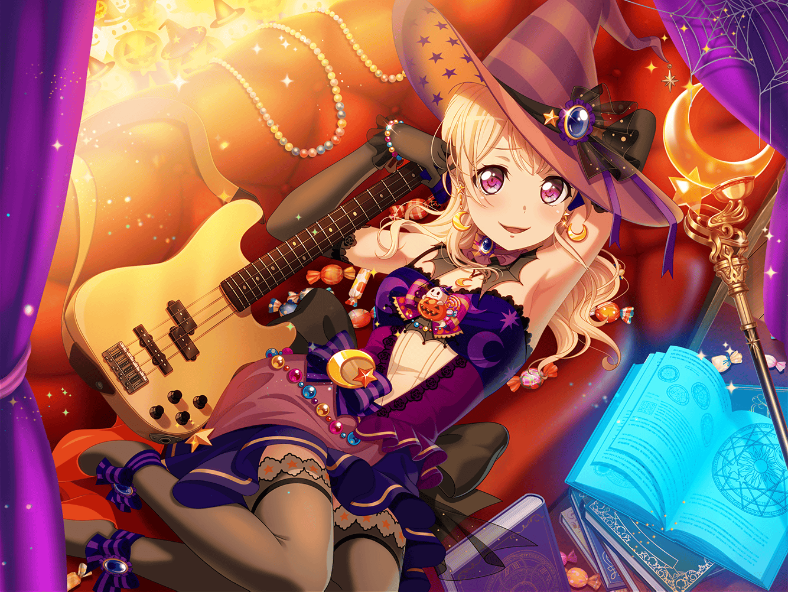

CiRCLE カフェテリア
千聖
あら。
{{userName}}さん、こんにちは
千聖
ごめんなさい、スマホを見ていて、気づくのが遅れてしまって
千聖
今日もお仕事ですか？
お疲れさまです
千聖
私ですか？ この前あったハロウィンロケの
感想を見ていました
千聖
私をフォローしてくれているファンの方達が
たくさん感想を上げてくれていて
千聖
……番組は観ていただけました？
千聖
ふふ、ありがとうございます♪
千聖
あのロケでは、麻弥ちゃんが仕掛け人として、
私達を誘導していました
千聖
そのおかげで全員に見せ場ができましたし、
ほどよい尺にまとまっていました
千聖
……はい。いい番組になっていたと思います
千聖
{{userName}}さんは、どう思いましたか？
千聖
こうして視聴者の方の意見を直接聞く機会も貴重ですから。
もし気がついたことがあったら教えてください
千聖
……はい。
……えっ？
千聖
私が……楽しそう、だった？
そう、でしょうか……
千聖
でも……そうですね。
たしかに、いくつかあったかもしれませんね
千聖
昔の私だったら、自分が上手く企画を回さなきゃ、とか。
そもそも仕事だから楽しんでいいわけがない、とか。
そういうことを考えていました
千聖
けれど今はパスパレのみんなと仕事をしています
千聖
みんなと仕事をする時は……そうですね、
リラックスして臨めている気がします
千聖
収録中でも肩の力を抜いて、自然に笑えるんです
千聖
だから、私が楽しそうに見えたのはそれが理由かもしれませんね。
実際に私自身も、楽しんでいたのだと思います
千聖
……観ている方も楽しかった、ですか？
千聖
ふふ、ありがとうございます。
そう言ってもらえると、出演した側としても嬉しいです
千聖
そうですね……出演者がつまらなさそうだったら、
観ている方も楽しめませんからね
千聖
自分が楽しむからこそ、その楽しさが視聴者に伝えられる
千聖
また大事なことに気づけました。
ありがとうございます
千聖
……あっ！ お仕事中に長話もよくないですね。
ごめんなさい
千聖
今度、また番組のロケに行く予定なんです
千聖
放送されたら、ぜひまた観てください。
その時は感想、教えてくださいね♪